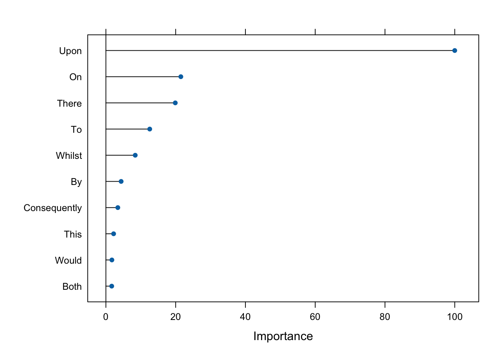
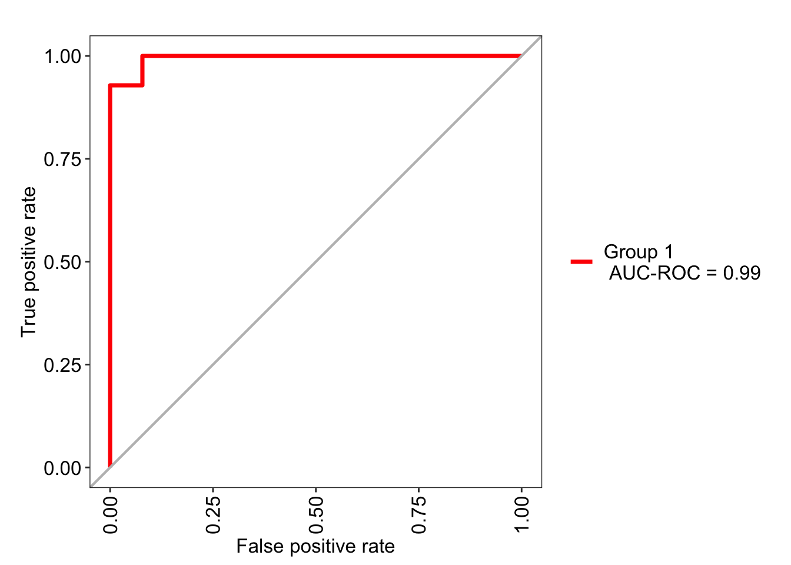

library(tidyverse)
library(quanteda)
library(rsample)
library(gt)
library(caret) # basic implementation
library(MLeval) # utilities for performance evaluation14 Random Forest
We’re going to repeat the Federalist classification problem. Rather than a loasso regression model, however, this time we’ll be constructing a random forest classification model.
Broadly, random forests generate many classification trees. Each tree gives a classification, and we say the tree “votes” for that class. The forest chooses the classification having the most votes (over all the trees in the forest).
If you’re unfamiliar with random forests, you can (and should) read more here:
https://www.stat.berkeley.edu/~breiman/RandomForests/cc_home.htm
15 Variables
As with the Lab on lasso regression, we’ll start with Mosteller & Wallace’s lists of tokens.
Their first group contains 70 tokens…
mw_group1 <- c("a", "all", "also", "an", "and", "any", "are", "as", "at", "be", "been", "but", "by", "can", "do", "down", "even", "every", "for", "from", "had", "has", "have", "her", "his", "if", "in", "into", "is", "it", "its", "may", "more", "must", "my", "no", "not", "now", "of", "on", "one", "only", "or", "our", "shall", "should", "so", "some", "such", "than", "that", "the", "their", "then", "there", "things", "this", "to", "up", "upon", "was", "were", "what", "when", "which", "who", "will", "with", "would", "your")Their second an addional 47…
mw_group2 <- c("affect", "again", "although", "among", "another", "because", "between", "both", "city", "commonly", "consequently", "considerable", "contribute", "defensive", "destruction", "did", "direction", "disgracing", "either", "enough", "fortune", "function", "himself", "innovation", "join", "language", "most", "nor", "offensive", "often", "pass", "perhaps", "rapid", "same", "second", "still", "those", "throughout", "under", "vigor", "violate", "violence", "voice", "where", "whether", "while", "whilst")And their third another 48 (though they identify some by lemmas and another “expence” doesn’t appear in our data, possibly because of later editing done in our particular edition)…
mw_group3 <- c("about", "according", "adversaries", "after", "aid", "always", "apt", "asserted", "before", "being", "better", "care", "choice", "common", "danger", "decide", "decides", "decided", "deciding", "degree", "during", "expense", "expenses", "extent", "follow", "follows", "followed", "following", "i", "imagine", "imagined", "intrust", "intrusted", "intrusting","kind", "large", "likely", "matter", "matters", "moreover", "necessary", "necessity", "necessities", "others", "particularly", "principle", "probability", "proper", "propriety", "provision", "provisions", "requisite", "substance", "they", "though", "truth", "truths", "us", "usage", "usages", "we", "work", "works")All together, they list 165 candidate variables, though it works out to be 180 unlemmatized tokens as potential variables for their model.
We’ll concatenate a vector of all their variables into a single vector.
mw_all <- sort(c(mw_group1, mw_group2, mw_group3))16 The Federalist Papers
And we’ll start by setting up our data much like we did for lasso. First, we’ll get the metadata…
load("../data/federalist_meta.rda")
load("../data/federalist_papers.rda")fed_meta <- federalist_meta %>%
dplyr::select(doc_id, author_id)17 Preparing the Data
Now, we’ll tokenize the data.
fed_tokens <- federalist_papers %>%
corpus() %>%
tokens(remove_punct = T, remove_symbols = T, what = "word")And create a weighted dfm. The 3rd line preps the column so it can be merged with our metadata. The 4th orders the tokens by their mean frequencies. This isn’t necessary here, but can be useful when doing quick subsetting of variables. And the 5th changes the column name for easy joining.
fed_dfm <- fed_tokens %>% dfm() %>% dfm_weight(scheme = "prop") %>%
convert(to = "data.frame") %>%
mutate(doc_id = str_remove(doc_id, ".txt$")) %>%
select(doc_id, names(sort(colMeans(.[,-1]), decreasing = TRUE)))Now let’s join the author_id from the metadata.
fed_dfm <- fed_dfm %>%
right_join(fed_meta) %>%
dplyr::select(doc_id, author_id, everything())18 Training and testing data
Now we can subset out our training and testing data.
train_dfm <- fed_dfm %>%
filter(author_id == "Hamilton" | author_id == "Madison") %>%
dplyr::select(doc_id, author_id, all_of(mw_all)) %>%
mutate(author_id = factor(author_id)) %>%
column_to_rownames("doc_id")
# Note that some R functions have difficulty when column names are same as base function names like 'in' or 'if'.
# To head off any problems, we'll convert the first letter to upper case.
colnames(train_dfm)[-1] <- colnames(train_dfm)[-1] %>% str_to_title()
test_dfm <- fed_dfm %>%
filter(author_id == "Disputed") %>%
dplyr::select(doc_id, author_id, all_of(mw_all)) %>%
column_to_rownames("doc_id")
colnames(test_dfm)[-1] <- colnames(test_dfm)[-1] %>% str_to_title()19 Create a model
Now let’s generate a random forest model. Fist, note that when the training set for the current tree is drawn by sampling with replacement, about one-third of the cases are left out of the sample. This oob (out-of-bag) data is used to get a running unbiased estimate of the classification error as trees are added to the forest. It is also used to get estimates of variable importance.
Thus, we don’t necessarily need to sample out a validation set of our data, though you certainly can.
We’ll set our seed. And generate a model.
set.seed(123)
fed_m1 <- train(author_id ~ ., data=train_dfm,
method="rf", trControl = trainControl(savePredictions = "final"))fed_m1Random Forest
65 samples
180 predictors
2 classes: 'Hamilton', 'Madison'
No pre-processing
Resampling: Bootstrapped (25 reps)
Summary of sample sizes: 65, 65, 65, 65, 65, 65, ...
Resampling results across tuning parameters:
mtry Accuracy Kappa
2 0.7749857 0.0000000
91 0.9551764 0.8644520
180 0.9502448 0.8474114
Accuracy was used to select the optimal model using the largest value.
The final value used for the model was mtry = 91.Let’s set aside the error rate for a moment, and walk through the prediction… So now we use the model on our test data.
pred_fed <- predict(fed_m1, test_dfm)#knitr::kable(col.names = c("Pred. Author"))
predict(fed_m1, test_dfm, type = "prob") |>
rownames_to_column("Disputed") |>
gt()| Disputed | Hamilton | Madison |
|---|---|---|
| FEDERALIST_49 | 0.108 | 0.892 |
| FEDERALIST_50 | 0.368 | 0.632 |
| FEDERALIST_51 | 0.164 | 0.836 |
| FEDERALIST_52 | 0.178 | 0.822 |
| FEDERALIST_53 | 0.158 | 0.842 |
| FEDERALIST_54 | 0.350 | 0.650 |
| FEDERALIST_55 | 0.404 | 0.596 |
| FEDERALIST_56 | 0.202 | 0.798 |
| FEDERALIST_57 | 0.176 | 0.824 |
| FEDERALIST_58 | 0.090 | 0.910 |
| FEDERALIST_62 | 0.086 | 0.914 |
| FEDERALIST_63 | 0.236 | 0.764 |
This is close to what predicted with lasso regression at the beginning of the semester with the exception of Federalist 55, which is predicted here as Hamilton rather than Madison! Now let’s look quickly at variable importance.
Every node in the decision trees is a condition on a single feature, designed to split the dataset into two so that similar response values end up in the same set. The measure based on which (locally) optimal condition is chosen is called impurity. For classification, it is typically either Gini impurity or information gain/entropy. Thus when training a tree, it can be computed how much each feature decreases the weighted impurity in a tree.
For a forest, the impurity decrease from each feature can be averaged and the features are ranked according to this measure. These are the features that are important to our particular model and from our model, we can retrieve using varImp() these.
m1_imp <- varImp(fed_m1, scale = TRUE)We can put this result in tabular form.
m1_imp$importance |>
rownames_to_column("Feature") |>
arrange(-Overall) |>
head(10) |>
gt()| Feature | Overall |
|---|---|
| Upon | 100.000000 |
| On | 21.483177 |
| There | 19.889467 |
| To | 12.564302 |
| Whilst | 8.411621 |
| By | 4.370450 |
| Consequently | 3.417843 |
| This | 2.212836 |
| Would | 1.715947 |
| Both | 1.667829 |
Or we can create a plot.
plot(m1_imp, top = 10)
20 Setting the control hyperparameters
The caret package allows you to set control parameters for the type of cross-validation to use, the number of folds to use, etc.
ctrl_1 <- trainControl(method="cv",
classProbs=T,
savePredictions = T)
ctrl_2 <- trainControl(method = "repeatedcv",
number = 10,
repeats = 3,
savePredictions = TRUE,
classProbs = TRUE,
search = "grid")
fed_m2 <- train(author_id ~ ., data=train_dfm,
method="rf", preProc=c("center", "scale"),
trControl=ctrl_1, metric="ROC")
fed_m3 <- train(author_id ~ ., data=train_dfm,
method="rf", preProc=c("center", "scale"),
trControl=ctrl_2, metric="ROC")| Disputed | Hamilton | Madison |
|---|---|---|
| FEDERALIST_49 | 0.088 | 0.912 |
| FEDERALIST_50 | 0.390 | 0.610 |
| FEDERALIST_51 | 0.118 | 0.882 |
| FEDERALIST_52 | 0.156 | 0.844 |
| FEDERALIST_53 | 0.142 | 0.858 |
| FEDERALIST_54 | 0.356 | 0.644 |
| FEDERALIST_55 | 0.328 | 0.672 |
| FEDERALIST_56 | 0.136 | 0.864 |
| FEDERALIST_57 | 0.132 | 0.868 |
| FEDERALIST_58 | 0.082 | 0.918 |
| FEDERALIST_62 | 0.072 | 0.928 |
| FEDERALIST_63 | 0.172 | 0.828 |
| Disputed | Hamilton | Madison |
|---|---|---|
| FEDERALIST_49 | 0.102 | 0.898 |
| FEDERALIST_50 | 0.382 | 0.618 |
| FEDERALIST_51 | 0.166 | 0.834 |
| FEDERALIST_52 | 0.190 | 0.810 |
| FEDERALIST_53 | 0.152 | 0.848 |
| FEDERALIST_54 | 0.366 | 0.634 |
| FEDERALIST_55 | 0.402 | 0.598 |
| FEDERALIST_56 | 0.170 | 0.830 |
| FEDERALIST_57 | 0.166 | 0.834 |
| FEDERALIST_58 | 0.120 | 0.880 |
| FEDERALIST_62 | 0.100 | 0.900 |
| FEDERALIST_63 | 0.212 | 0.788 |
For a more complete evaluation of the model, we can use evalm() from MLeval:
m2_eval <- evalm(fed_m2, silent = TRUE, showplots = FALSE)
m3_eval <- evalm(fed_m3, silent = TRUE, showplots = FALSE)Code
m2_eval$optres$`Group 1` |>
data.frame() |>
rownames_to_column("Statistic") |>
gt()| Statistic | Score | CI |
|---|---|---|
| SENS | 0.929 | 0.69-0.99 |
| SPEC | 1.000 | 0.93-1 |
| MCC | 0.954 | NA |
| Informedness | 0.929 | NA |
| PREC | 1.000 | 0.77-1 |
| NPV | 0.981 | 0.9-1 |
| FPR | 0.000 | NA |
| F1 | 0.963 | NA |
| TP | 13.000 | NA |
| FP | 0.000 | NA |
| TN | 51.000 | NA |
| FN | 1.000 | NA |
| AUC-ROC | 0.990 | 0.95-1.03 |
| AUC-PR | 0.910 | NA |
| AUC-PRG | 0.860 | NA |
m2_eval$roc
Okay, we’ve repeated this task a couple of times now. Both times, we’ve taken advantage of Mosteller & Wallace’s filtering of variables. This has made life much easier for us. But what if we didn’t have their candidate words to feed into our models? What if we were starting from the dfm with 8765 words? How would you tackle variable selection, knowing that random forests don’t do well with highly zero-skewed variables. So just feeding the entire dfm into random forest isn’t going to be the best solution.
On the one hand, more common words are certainly good candidates for a model. On the other, you don’t want to throw out less frequent words that might be highly discriminatory….